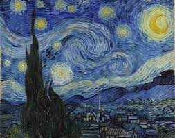

- Starry Night (Dutch: De sterrennacht) is an oil painting by the Dutch post-impressionist painter Vincent van Gogh. Created in June 1889, the painting depicts the view from the east-facing window of his room at the Saint-Rémy-de-Provence asylum just before sunrise over the village.
- Since 1941, the painting has been part of the permanent collection of the Museum of Modern Art in New York City. Starry Night is one of Van Gogh's most famous works and is considered one of the most famous paintings in Western culture.
ANASAYFAYA GERİ DÖN